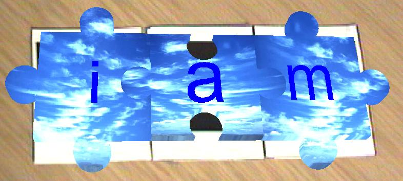

|  | patrick sinclair |
|
This page describes some of the work that has been done with the ARToolkit. For more information on the ARToolkit, please visit the ARToolkit page at the University of Washington or view an internal page describing it. Adaptive Hypermedia in Augmented Reality
These screenshots were taken of some work which was written up as a position paper for the Adaptive Hypermedia workshop at the Hypertext 2001 conference. This paper was also presented as a poster at the workshop. The aim of this work is to add labels to three-dimensional objects such as the aeroplanes shown above. These labels can be adapted to the person viewing the objects. This is illustrated in the figure below, where the picture on the left shows a label aimed at a child while the one on the right is aimed at adults.
These models can also be loaded into the ARToolkit, as shown below.
Figure 3: Holding a model in the ARToolkit (click for video) For more information, see:
salt 'n pepper: spraying links in augmented reality
This demo shows a prototype for an Augmented Reality Hypertext system where links can be shaken onto a document - like salt and pepper. When the user has too many links on his document, he can simply shake them off. This demo is still under construction, so check back later for more details for further information:
http://www.ecs.soton.ac.uk/~pass99r/research | |||
{kind=link}
{kind=link}
{kind=link}
{kind=link}
{kind=link}